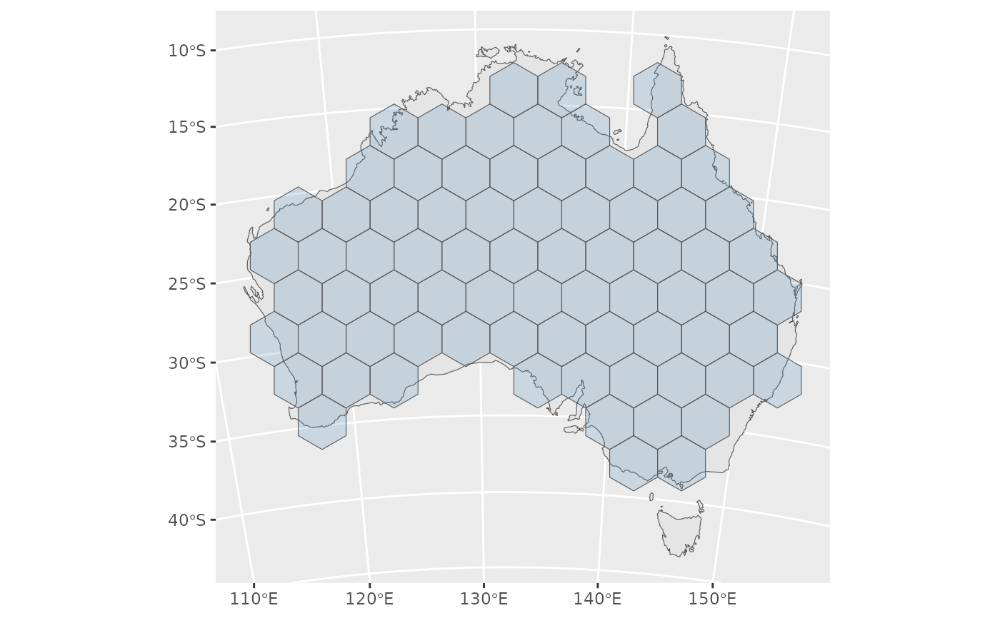

Tiles a geometry with exactly n_tiles equally sized hexagons. The hexagon
size is chosen so that n_tiles hexagons have the same total area as the
geometry, and the hexagons that overlap the geometry the most are kept.
Usage
hex_grid(object, n_tiles = NROW(object), island_gap = 0.5, crs = NULL)Arguments
- object
An sf object, or a geometry column (sfc), to tile. It is recommended to first simplify the geometry to speed up the tiling.
- n_tiles
The number of hexagons. Defaults to one for each region of
object.- island_gap
The distance, in hexagon widths, beyond which landmasses are tiled as separate islands. Use
Infto tile all land together.- crs
The projected coordinate reference system to make the hexagons in, such as the one the map will be plotted in.
objectis transformed tocrswithsf::st_transform(). Defaults to the CRS ofobject, or for longitude/latitude input, to a Lambert azimuthal equal-area CRS centred on the data ("+proj=laea +lat_0=... +lon_0=...").
Value
A geometry column (sfc) of n_tiles hexagons that tile the input
geometry, in the coordinate reference system they were made in.
Details
Landmasses that are further apart than island_gap hexagon widths are
tiled separately. The hexagons of different landmasses are always separated
by at least one empty hexagon, so islands such as Tasmania remain visibly
distinct from the mainland. When object has several regions, each
landmass gets a share of the n_tiles hexagons in proportion to its number
of regions (so by default, exactly one hexagon for each of its regions, as
in hexmap()). A single geometry is shared between its landmasses in
proportion to their area.
hex_grid() and hex_allocate() are the two steps of an ungrouped
hexmap(): hexmap(x) is the same as hex_allocate(x, hex_grid(x)).
Grouped hexagon maps are instead made by a layout.
Examples
library(sf)
election <- st_transform(aus_election_2025, 3577)
# A hexagon for each electoral division
grid <- hex_grid(election)
# The outline of Australia with 75 hexagons
australia <- st_union(election)
grid <- hex_grid(australia, n_tiles = 75)
library(ggplot2)
ggplot() +
geom_sf(data = australia) +
geom_sf(data = grid, fill = "steelblue", alpha = 0.2)
